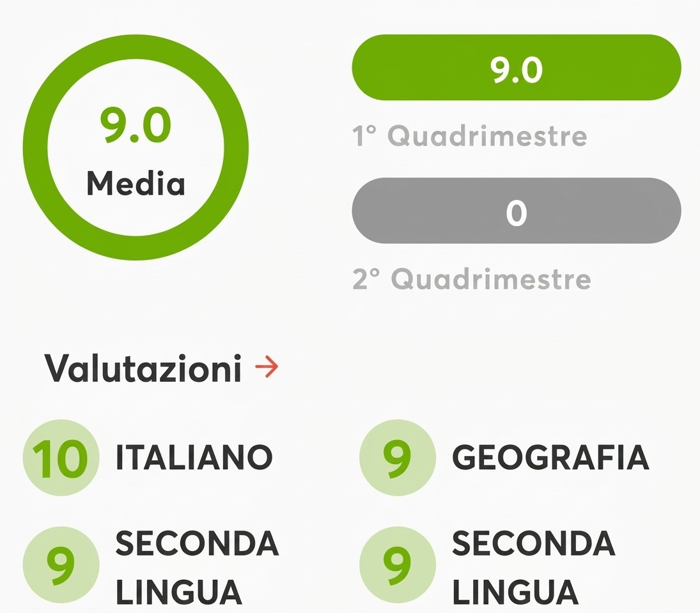

VOTI
Il tuo spazio per monitorare i progressi, celebrare i traguardi e trasformare ogni risultato in un punto di partenza.
Il tuo spazio per monitorare i progressi, celebrare i traguardi e trasformare ogni risultato in un punto di partenza.
Qui hai il controllo completo sul tuo andamento scolastico: consulta tutte le valutazioni divise per materia e periodo, visualizza la media generale e quella di ogni singola disciplina e analizza i grafici di crescita nel tempo. Puoi anche usare il simulatore per calcolare quale voto ti serve per alzare la media, filtrare le prove per tipologia (scritto, orale, pratico) e leggere i commenti o i consigli lasciati dai docenti.
